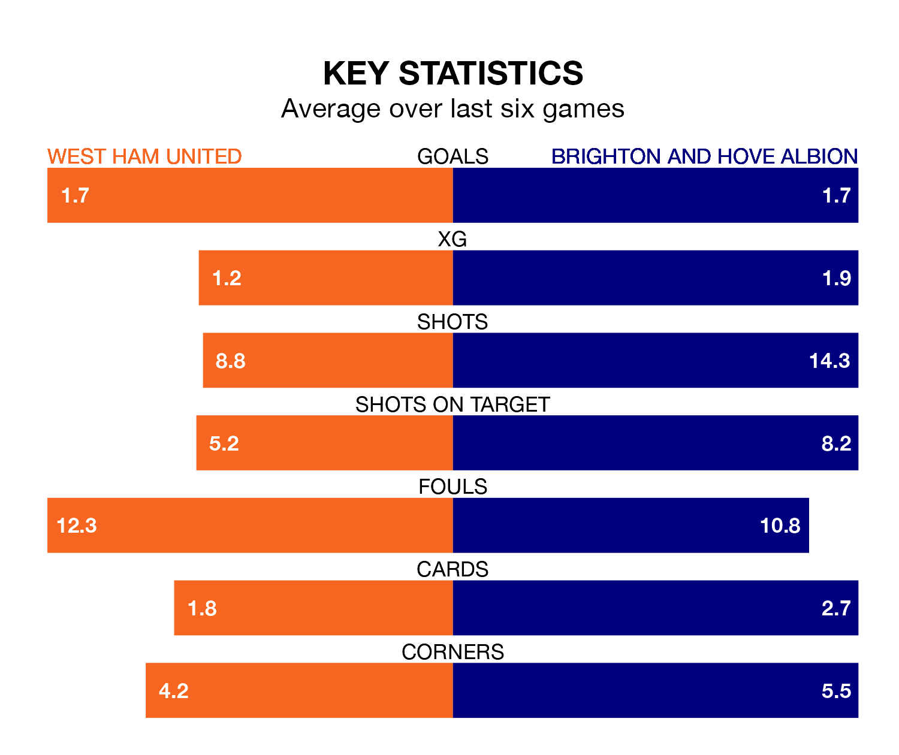

West Ham United host Brighton and Hove Albion at the London Stadium on late Tuesday on the back of three consecutive wins in the Premier League.
West Ham have picked up 13 points from their last six games, and they face a Brighton side who also won their last match, and have collected eight points from the last possible 18.
With 38 goals in 19 games so far this season, Brighton are scoring more than average in the league with 2.0 goals per game. But they are conceding more than average too, letting in 33 goals at a rate of 1.7 per game.
West Ham are also above average scorers, with 1.7 goals per game, compared to a league average of 1.6. They have conceded 1.6 goals per game.
In the last 10 years, West Ham and Brighton have played each other on 13 occasions. West Ham won one of them, Brighton six, and they drew six times.
On average, the Hammers scored 1.2 goals and Brighton 2.1 in those matches.
Their last meeting was on August 26, when West Ham won 3-1 away.
In Jarrod Bowen, United have one of the league's most on-form strikers so far this season. He has notched 11 goals in 18 appearances, to sit fifth in the scoring charts.
His goal rate of one every 147 minutes is slightly quicker than that of João Pedro, Albion's top scorer with a goal every 150 minutes, and a total of seven goals in 19 games.
The Hammers are sixth in the table after 19 games, of which they have won 10 and drawn three, earning 33 points.
The visitors are two places behind the home side in eighth, with eight wins and six draws putting them on 30 points.
West Ham's last match was on Thursday, a 2-0 win against Arsenal, with Konstantinos Mavropanos and Tomáš Souček getting the goals for the Hammers.
Brighton beat Tottenham Hotspur 4-2 last time out, also on Thursday, with Junqueira de Jesus (two), Jack Hinshelwood and Pervis Estupiñán on the scoresheet.
Updated: 12:57, 02/01/24